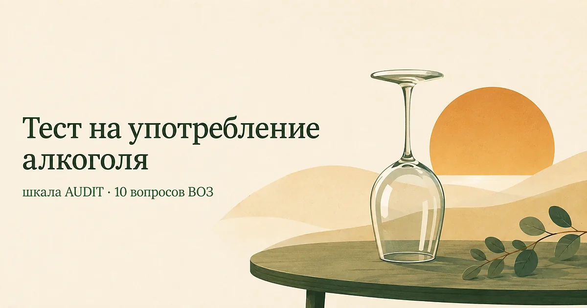

Тест на употребление алкоголя (AUDIT)
Обновлено: 10.08.2026 · 3 минуты на прохождение
AUDIT — тест Всемирной организации здравоохранения из десяти вопросов, созданный для того, чтобы отличить безопасное употребление алкоголя от рискованного до того, как появятся последствия. Он спрашивает не только «сколько», но и о том, как алкоголь встроен в жизнь: были ли провалы в памяти, чувство вины, замечания близких. Результат — от 0 до 40 баллов. Бесплатно, без регистрации, ответы остаются в браузере.

Что показывает AUDIT
Опросник разработан по заказу ВОЗ в 1980-х и проверялся сразу в шести странах — это редкость для психометрических шкал и главная причина, по которой его используют по всему миру. Задача была практическая: дать врачу общей практики способ за две минуты выявить рискованное употребление на той стадии, когда человек ещё не считает себя пьющим и сам за помощью не придёт.
Десять вопросов делятся на три части: первые три — про количество и частоту, следующие три — про признаки утраты контроля, последние четыре — про последствия для себя и окружающих. Такая структура важна: человек может пить немного, но регулярно не помнить вечер, — и наоборот, выпивать заметно, не имея ни одного признака из второй половины.
Что считается одной порцией
Порция (стандартная доза) — это около 10 граммов чистого спирта. В привычных мерах:
| Напиток | Одна порция |
|---|---|
| Пиво 5% | около 250 мл |
| Вино 12% | около 100 мл |
| Крепкие напитки 40% | около 30 мл |
Практический ориентир: бокал вина в ресторане — это обычно полторы-две порции, а полулитровая банка пива — две. Люди систематически недооценивают выпитое именно из-за размера посуды.
Расшифровка результата
ВОЗ делит результат на четыре зоны, каждой соответствует своё действие.
| Баллы | Зона | Что рекомендует ВОЗ |
|---|---|---|
| 0–7 | Низкий риск | Ничего менять не требуется |
| 8–15 | Рискованное употребление | Сократить количество; обычно достаточно короткого разговора с врачом |
| 16–19 | Вредное употребление | Консультация и наблюдение специалиста |
| 20–40 | Вероятная зависимость | Полноценная оценка у нарколога |
Порог в 8 баллов — общепринятый. Для женщин и людей старше 65 лет во многих руководствах его снижают до 7: при одинаковом количестве выпитого концентрация алкоголя в крови у них выше.
Что делать с результатом
Низкий риск (0–7)
Действий не требуется. Полезно помнить, что «безопасной» дозы алкоголя, по нынешним данным ВОЗ, не существует — есть более и менее рискованные уровни. Это не повод для тревоги при таком результате, но повод не наращивать.
Рискованное употребление (8–15)
Самая многочисленная и самая благодарная зона: на этом уровне заметный эффект даёт простое сокращение, без лечения и без ярлыков. Работает конкретика — считать порции, а не «пить меньше»; заранее назначать дни без алкоголя; убирать запас из дома. Отдельно стоит посмотреть, не используется ли алкоголь как снотворное или как способ снять напряжение: он ухудшает вторую половину ночи и усиливает тревогу на следующий день (подробнее — в статье о бессоннице при тревоге).
Вредное употребление (16–19)
Здесь последствия обычно уже есть — для здоровья, работы или отношений, даже если они пока не выглядят катастрофой. Разумный шаг — консультация специалиста и договорённость о наблюдении. Часто в этой зоне алкоголь оказывается способом справляться с чем-то другим: тревогой, бессонницей, депрессией. Тогда работать нужно с обоими процессами сразу, иначе один возвращает другой.
Вероятная зависимость (20 и больше)
Такой результат означает, что стоит пройти полноценную оценку у нарколога. И одна вещь, которую важно знать до того, как принимать решения:
Если вы пьёте ежедневно или почти ежедневно, резко бросать самостоятельно опасно. Синдром отмены при физической зависимости может протекать с судорогами и делирием — это состояние, угрожающее жизни, и снимают его медикаментозно. Отказ в таком случае планируют вместе с врачом, а не силой воли. При тяжёлом состоянии отмены — 112.
Это не значит, что ситуация безнадёжна: зависимость относится к состояниям, которые лечат, и результаты тем лучше, чем раньше начата помощь.
Насколько тесту можно доверять
AUDIT — один из самых проверенных скрининговых инструментов в наркологии: при пороге в 8 баллов он выявляет рискованное употребление с чувствительностью и специфичностью около 90% в большинстве исследований. Он лучше опросников, спрашивающих только количество, потому что захватывает поведенческие признаки.
Ограничения. Тест опирается на самоотчёт, а именно в этой теме самоотчёт занижается сильнее всего — иногда неосознанно, из-за недооценки размера порций. Он охватывает последний год и не видит недавнего ухудшения. Он не различает причину: одинаковый балл может стоять за компанейской привычкой и за попыткой заглушить тревогу. И он не ставит диагноз — зависимость определяет врач по клиническим критериям.
Когда обращаться к врачу независимо от баллов
- по утрам появляются дрожь, потливость, тошнота, которые проходят после выпитого;
- случаются провалы в памяти после вечера;
- вы несколько раз пробовали сократить и не получалось;
- алкоголь стал обязательным условием, чтобы заснуть или успокоиться;
- близкие говорят об этом, а разговор вызывает раздражение или желание оправдаться;
- вы садились за руль после выпитого.
Первый пункт — признак физической зависимости, и он же тот случай, когда бросать самостоятельно нельзя.
Если результат оказался выше, чем вы думали, и хочется обсудить это без осуждения — расскажите, как обстоят дела. Анонимно и без регистрации.
Попробовать бесплатноЧастые вопросы
Сколько баллов по тесту AUDIT считается нормой?
Результат до 7 баллов относится к зоне низкого риска. С 8 баллов ВОЗ говорит о рискованном употреблении, с 16 — о вредном, с 20 — о вероятной зависимости. Для женщин и людей старше 65 лет порог часто снижают до 7 баллов, поскольку при том же количестве выпитого концентрация алкоголя в крови у них выше.
Тест AUDIT определяет алкоголизм?
Нет. AUDIT — скрининг: он показывает вероятность проблемы и зону риска, но диагноз не ставит. Результат от 20 баллов означает, что стоит пройти полноценную оценку у нарколога, а не то, что диагноз уже есть. Зависимость определяет врач по клиническим критериям после беседы.
Что считается одной порцией алкоголя?
Одна порция — это около 10 граммов чистого спирта: примерно 250 мл пива крепостью 5%, 100 мл вина 12% или 30 мл крепкого напитка 40%. Бокал вина в ресторане обычно составляет полторы-две порции, а банка пива 0,5 л — две порции.
Тест на алкоголь анонимный и бесплатный?
Да. Регистрация не нужна, тест бесплатный, ответы считаются прямо в браузере и никуда не отправляются — мы их не получаем и не храним. Результат виден только вам и исчезает после закрытия страницы.
Материал подготовлен командой AI Therapist. Мы приводим тест AUDIT в том виде, в каком он опубликован Всемирной организацией здравоохранения, с оригинальной системой подсчёта и границами зон риска. Страница носит просветительский характер, не является диагностическим заключением и не заменяет консультацию врача.
Источники: ВОЗ — AUDIT: The Alcohol Use Disorders Identification Test, guidelines for use in primary care, 2001, ВОЗ — информационный бюллетень об алкоголе, NHS — Alcohol advice.
Кто отвечает за содержание сайта и по каким правилам мы готовим материалы — на странице о проекте.